O experimento e performance Triste Baía foi realizado no Museu do Amanhã na ocasião do Hiperorgânicos 7. O experimento consistiu na aplicação de sensores para leitura da quantidade de resíduos sólidos presente em amostras de água coletadas no entorno do Museu, e também da água tratada de seus espelhos d’água. Em seguida uma performance foi realizada no átrio no Museu, as sonoridades foram moduladas de acordo com a leitura da quantidade de resíduos sólidos (microsiemens/v) presente em cada amostra, criando um ambiente sonoro de escutas da qualidade da água. O projeto teve a pretensão de provocar uma reflexão ecológica, através da comparação de amostras de realidade e ficção do meio ambiente.
Proposição: André Anastácio
Fotos: Nano e Elisabete Maisão
Projeto desenvolvido no contexto do Hiperôrganicos. Rio de Janeiro, 2017.
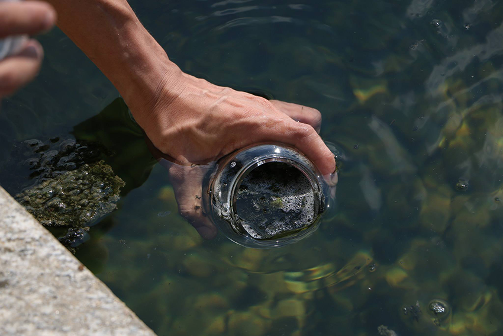
Triste Baía coleta de água da Baía de Guanabara
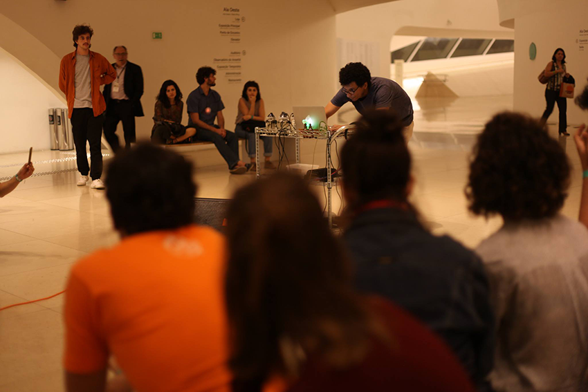
Triste Baía Performance no Museu do Amanhã
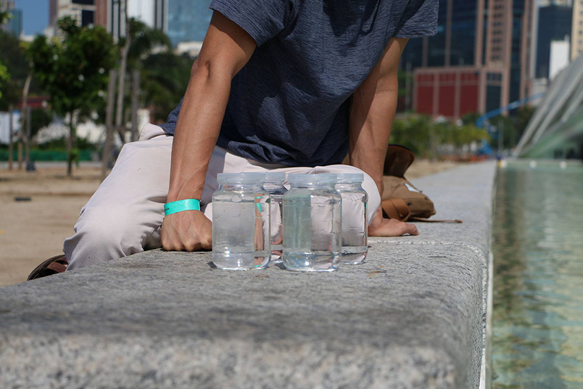
Triste Baíacoleta nos espelhos d'água no museu
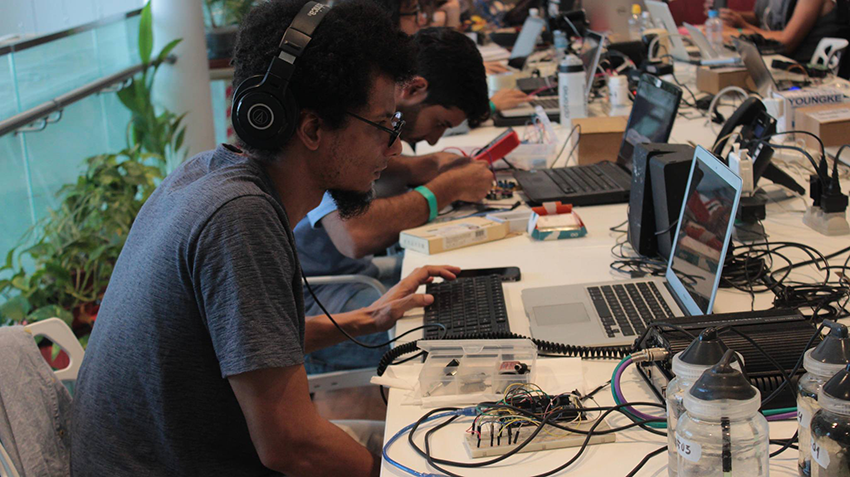
Triste Baía análise das amostras no lab do museu
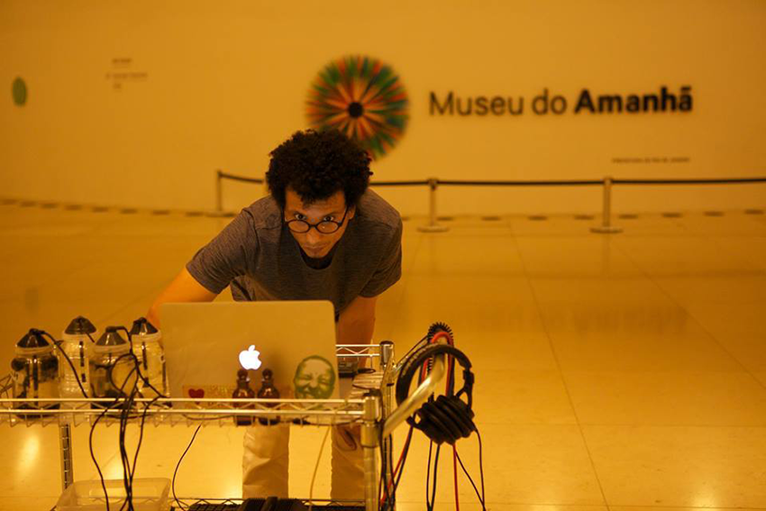
Triste Baíalaboratório ambulanteTriste Baíalaboratório ambulante
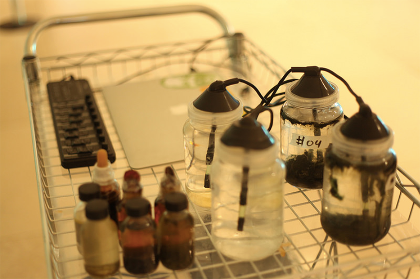
Triste Baíamontagem do laboratório ambulante
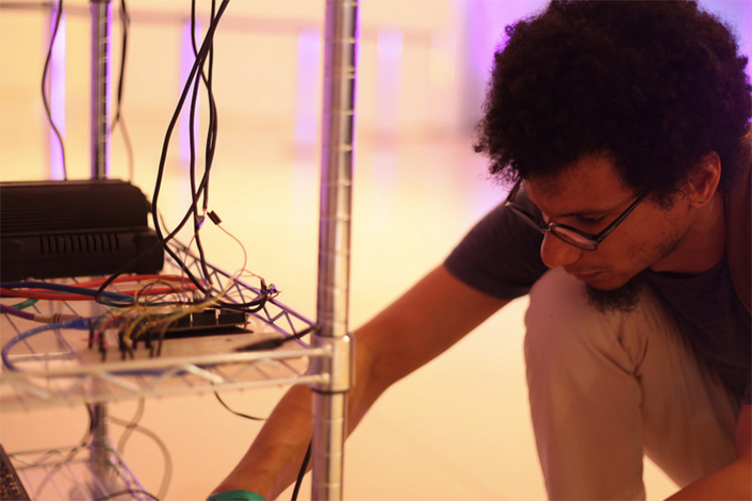
Triste Baíamontagem do laboratório ambulante
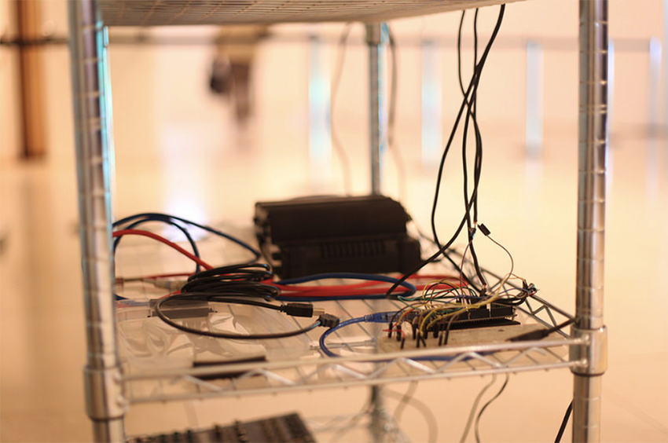
Triste Baíamontagem do laboratório ambulante
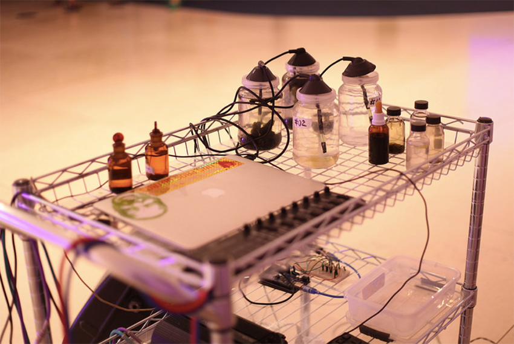
Triste Baíamontagem do laboratório ambulante
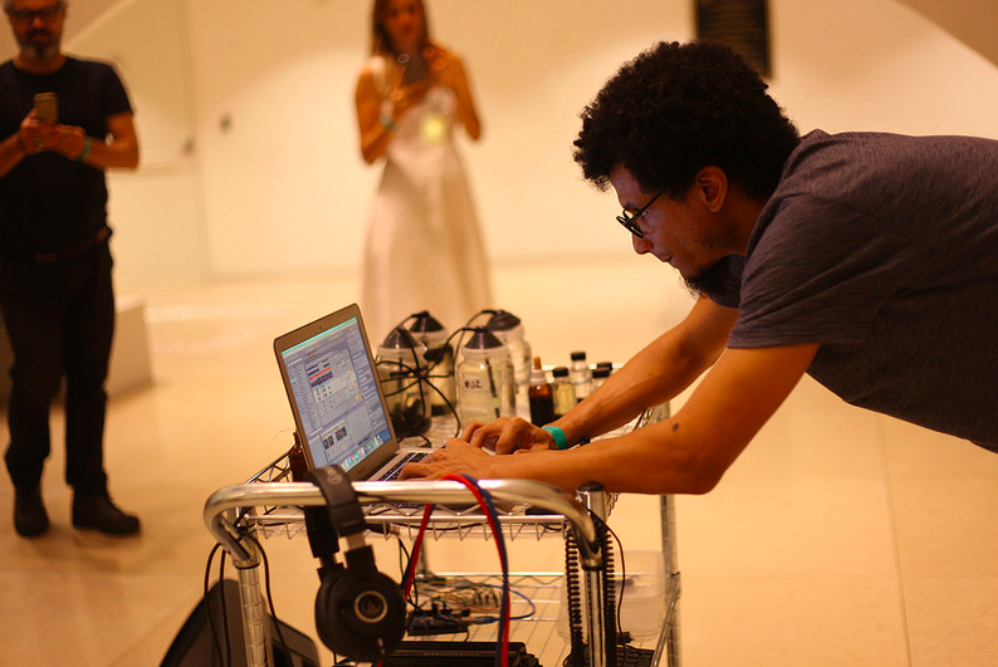
Triste BaíaPerformance no Museu do Amanhã
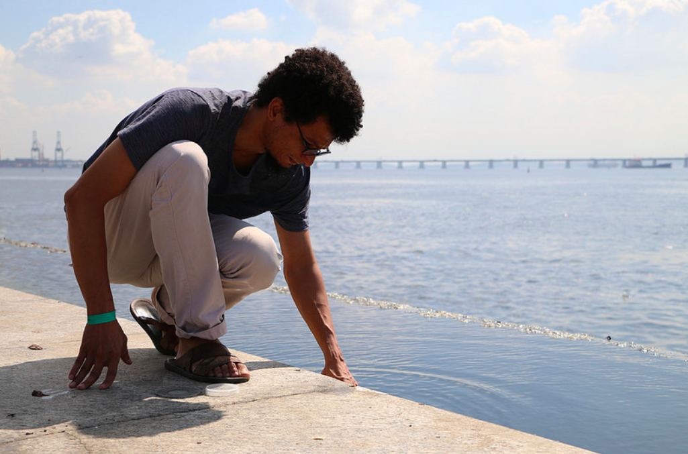
Triste Baíacoleta de água da Baía de Guanabara
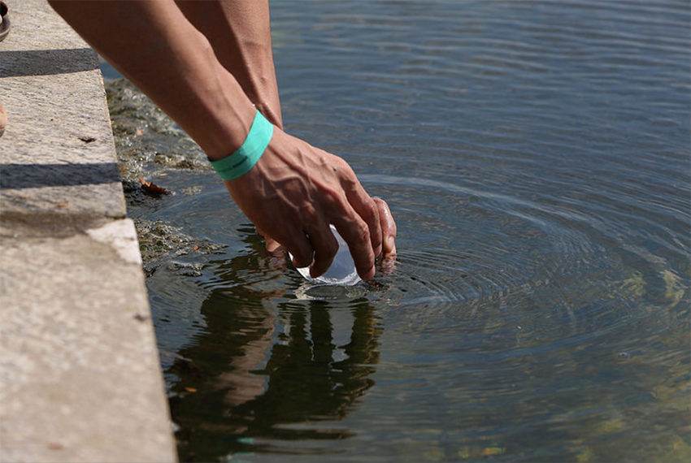
Triste Baíacoleta de água da Baía de Guanabara
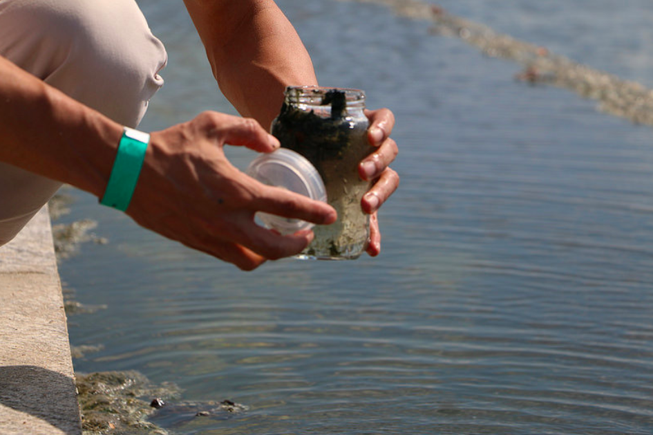
Triste Baíacoleta de água da Baía de Guanabara
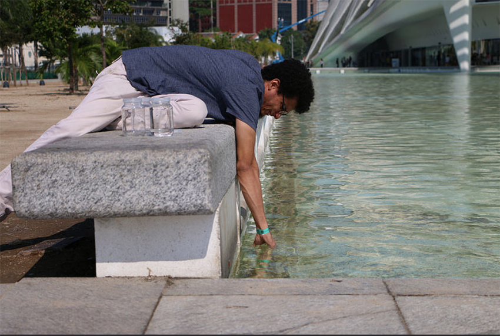
Triste Baíacoleta nos espelhos d'água no museu
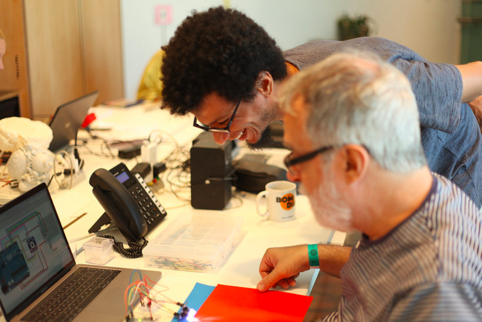
Triste Baíadesenvolvimento de circuitos no lab no museu
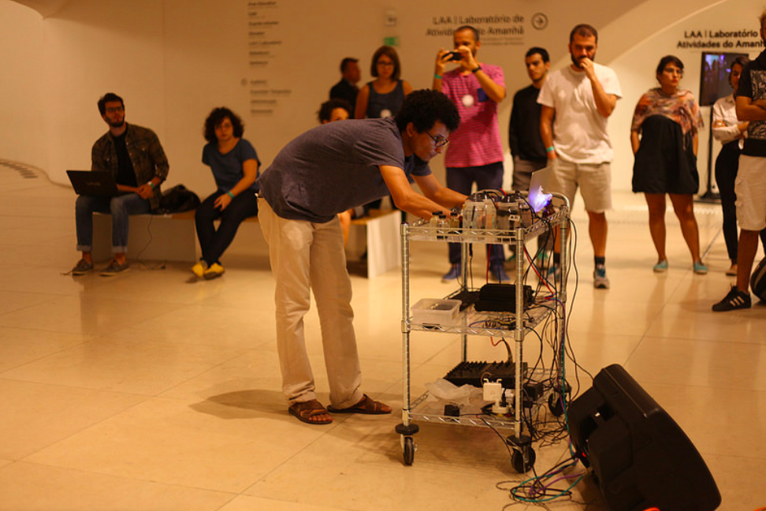
Triste BaíaPerformance no Museu do Amanhã
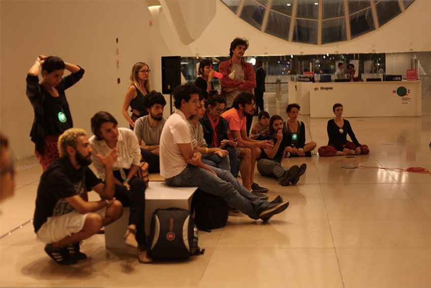
Triste BaíaPerformance no Museu do Amanhã